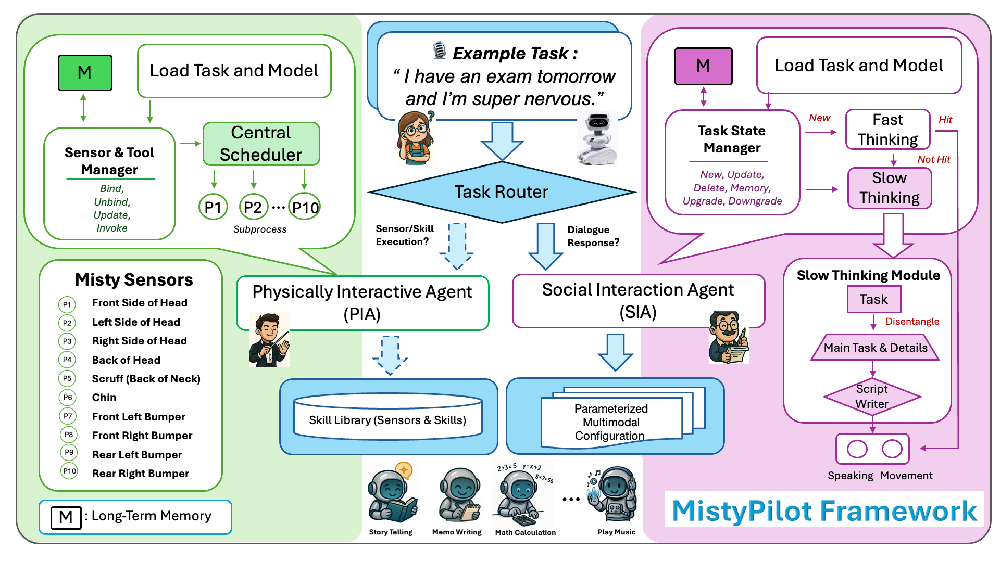

Programming small social robots from natural-language instructions requires more than invoking isolated APIs. Interactive tasks combine reactive physical behaviors with stateful social behaviors, while existing interfaces often require developers to manually compose APIs into skills, configure their parameters, bind sensor events to skills, and manage task states at runtime. We present MistyPilot, a multi-agent LLM framework that interprets high-level natural-language instructions and orchestrates the corresponding skills on the Misty social robot. A Task Router dispatches each instruction to one of two specialized agents: a Physically Interactive Agent for sensor-triggered robot control and direct skill invocation, and a Social Interaction Agent for dialogue-oriented task-state management and context-dependent multimodal response generation. To improve efficiency, the Social Interaction Agent reuses previously generated results when applicable and invokes full generation otherwise. We evaluate MistyPilot on five component-level suites, with sensor bindings and skill invocations executed on the physical Misty robot, and a preliminary user study with 12 participants. MistyPilot attains high accuracy on routing, sensor-skill binding, task-state parsing, result reuse, and skill extension up to 100 skills, and lower variance than an otherwise identical single-agent baseline, while participants report positive perceptions of usability and interaction quality.

Overview of the MistyPilot framework. A Task Router dispatches each instruction to the Physically Interactive Agent (PIA) for sensor-skill binding and skill invocation, or to the Social Interaction Agent (SIA) for dialogue. The PIA supports direct skill invocation, persistent sensor-skill bindings across sessions, and runtime integration of new skills from their docstrings alone. The SIA tracks task state with an explicit, editable Task State Manager and responds through a fast path that reuses stored results, or a slow path that generates emotion-conditioned multimodal output across speech, motion, and facial cues.
This material is based upon work supported under the AI Research Institutes program by the U.S. National Science Foundation and the Institute of Education Sciences, U.S. Department of Education, through Award #2229873 — National AI Institute for Exceptional Education. Any opinions, findings and conclusions, or recommendations expressed in this material are those of the author(s) and do not necessarily reflect the views of the National Science Foundation, the Institute of Education Sciences, or the U.S. Department of Education.